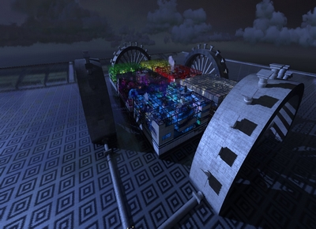
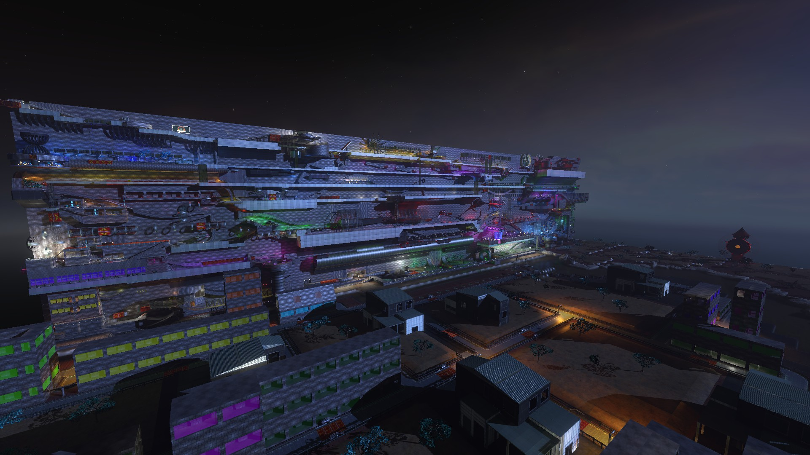
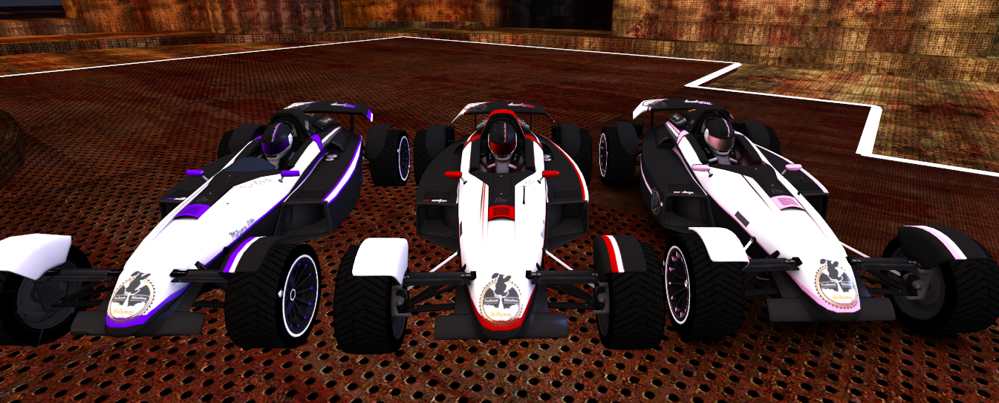
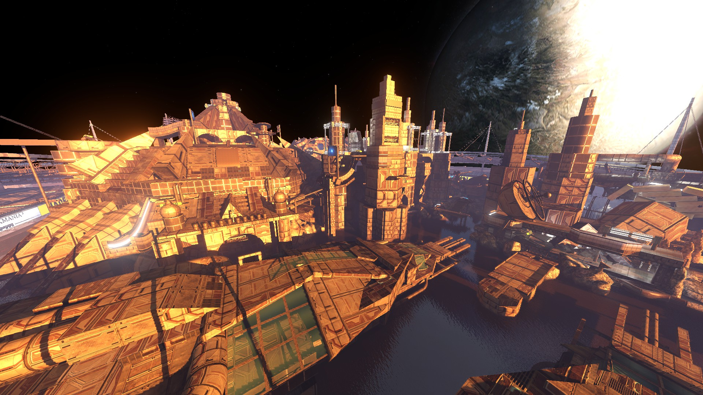
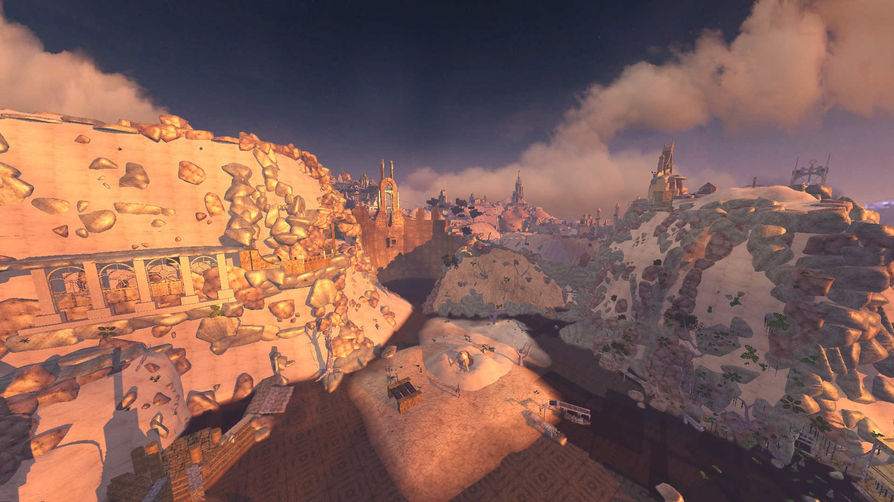
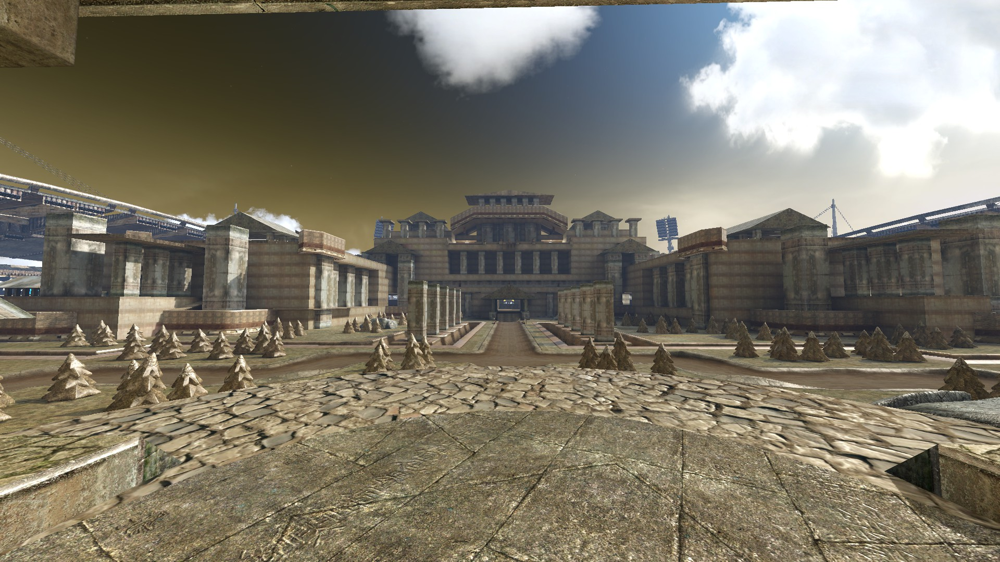
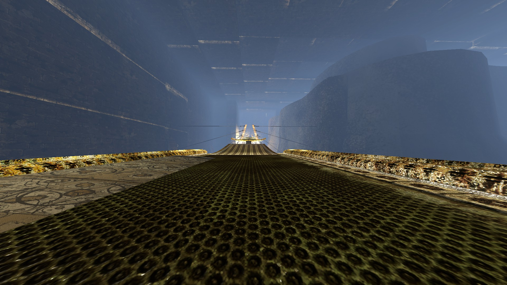
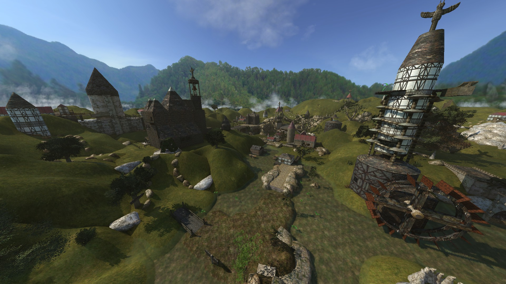
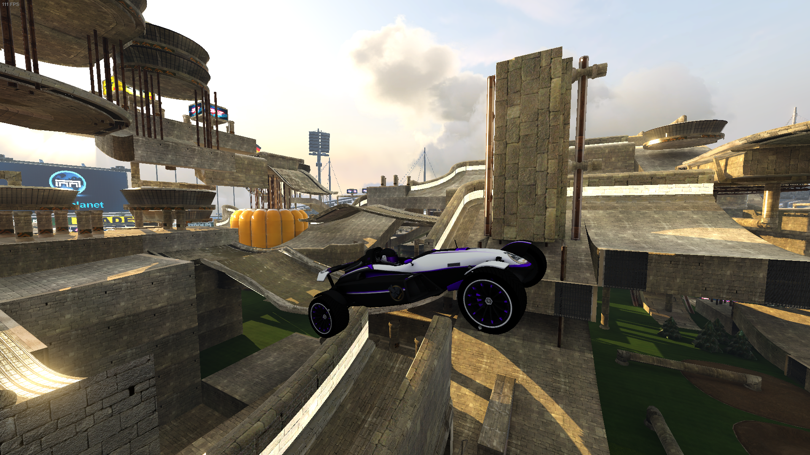

Seven, a map by chocolleight. The map is very special in the fact that
|

Maca-dam, a map built once again by Chocolleight. The map is a hard
|

Starting from left : Raistlin, Morhpeo and Sheeps |

Nos Astra by Golo, built in 2014. One of the trickiest RPG map and one of the prettiest and craziest map for its time :
|

Nameless track by Golo, build in 2015. One of the most innovative and prettiest map still to this day
|

Forum Hadriani by Vklf. One of the first RPG Titlepack maps. Most awarded RPG map on Mania-Exchange |

Maru by Gold-X. Considered to be one of the best RPG map on Trackmania²Stadium |

Village of the Sacred Feathers by Maxi031. One of the most iconic map of TM2 RPG. A lot of tournaments
|
|

Raistlin on Blackstar |